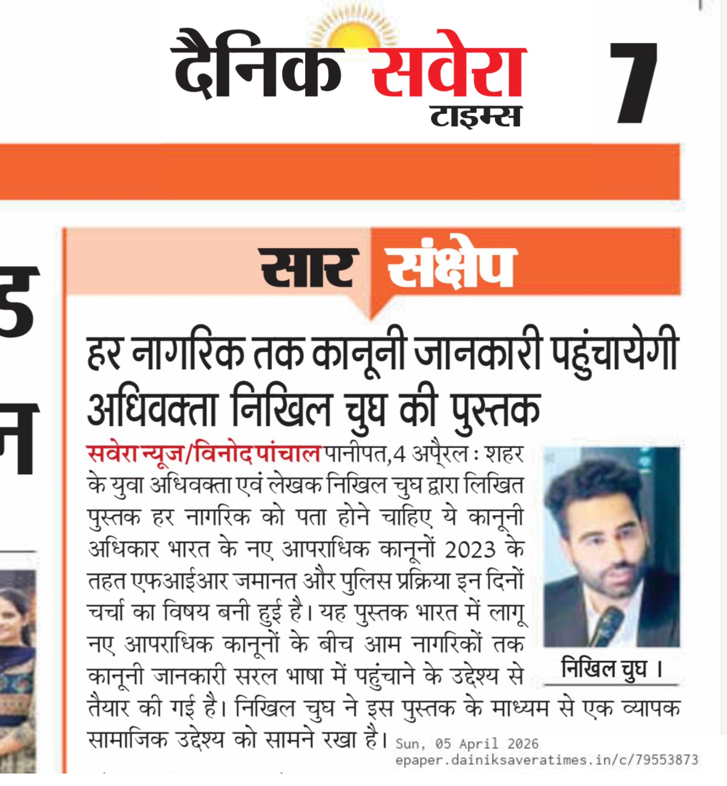
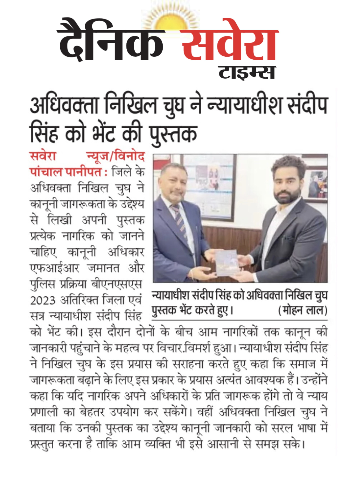
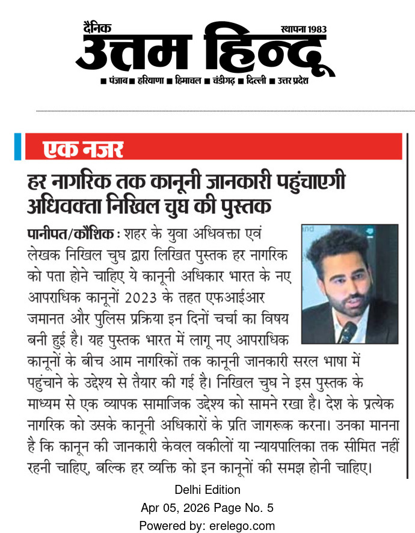
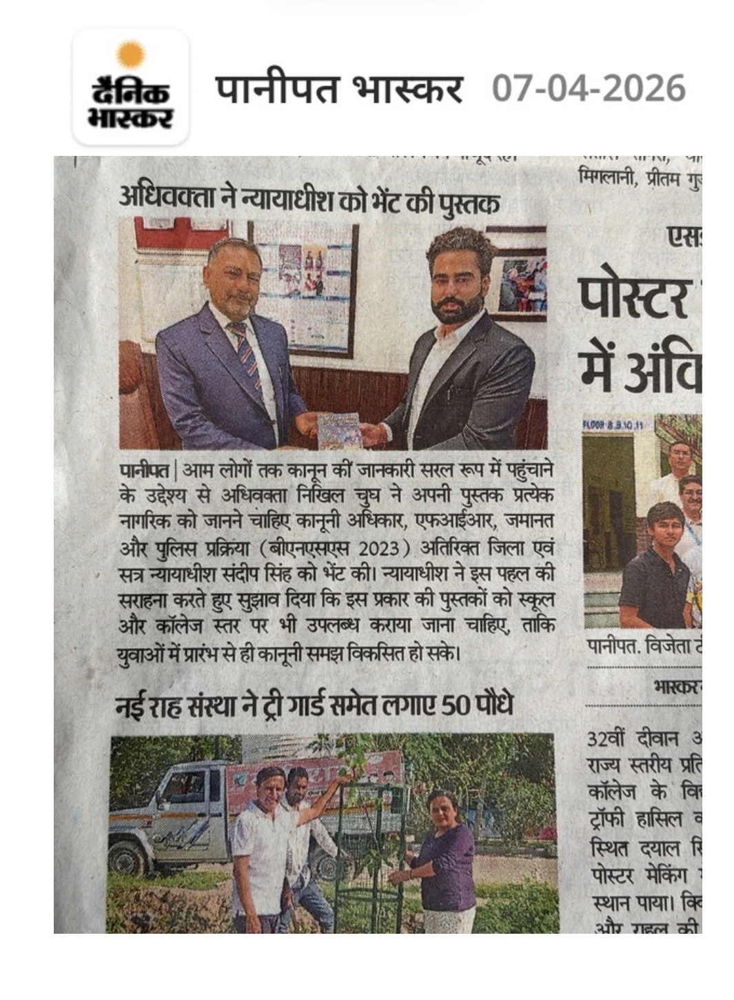
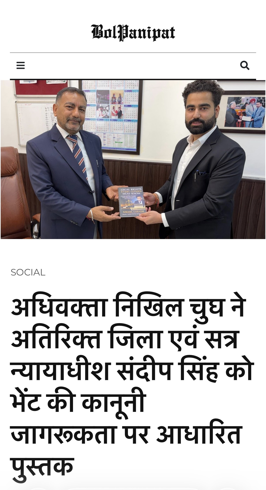
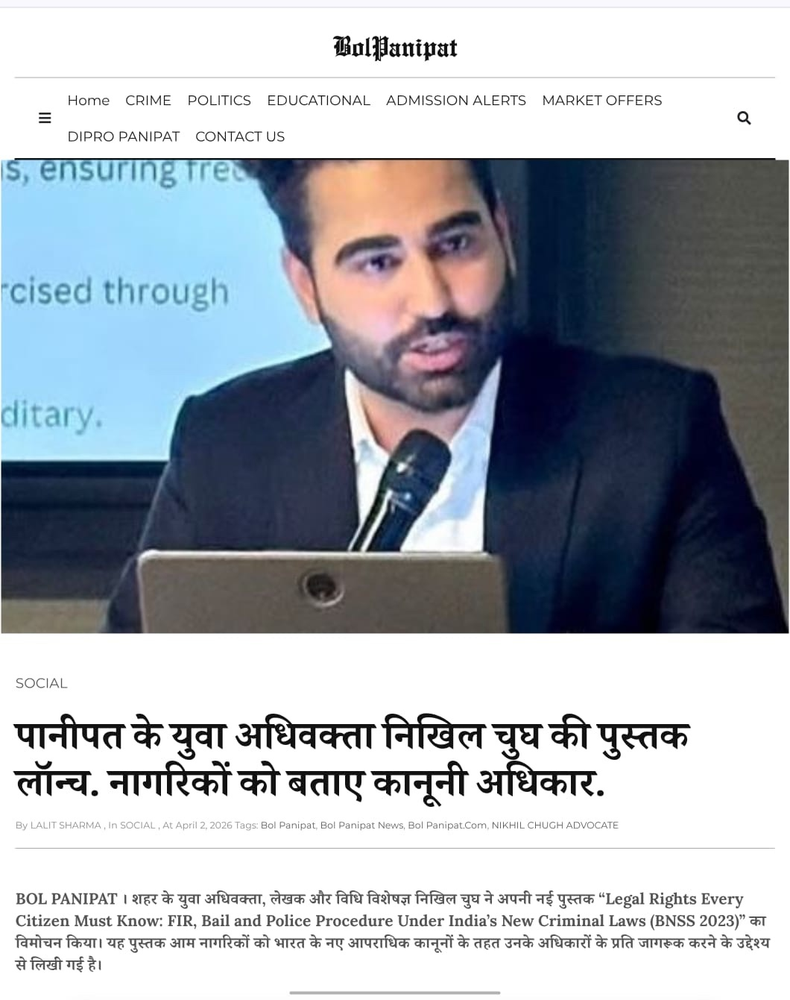

Advocate Nikhil Chugh Featured in Leading Newspapers
Legal Awareness Book on FIR, Bail and Police Procedure (BNSS 2023)
Nikhil Chugh is an Indian advocate, legal educator and author based in Panipat, Haryana, and a member of the Supreme Court Bar Association.
📘 The Book
“Legal Rights Every Citizen Must Know: FIR, Bail and Police Procedure Under India's New Criminal Laws (BNSS 2023)”
📰 Media Coverage
Dainik Savera Times Uttam Hindu




